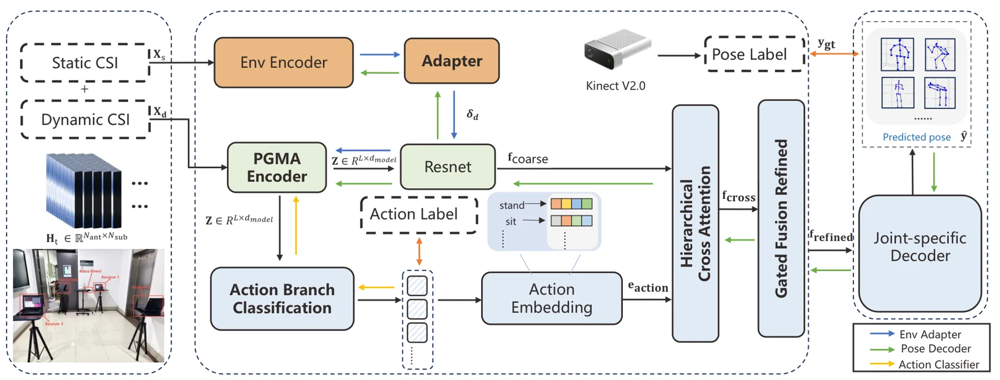
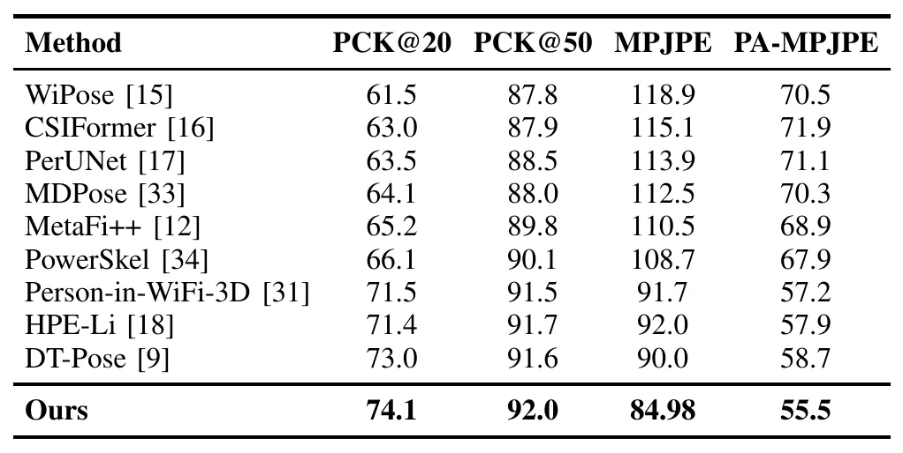

面向移动与跨环境设置的物理先验 WiFi 三维人体姿态估计Physics-Informed WiFi Sensing for Robust 3D Human Pose Estimation in Mobile and Cross-Environment Settings
与无线感知和跨环境鲁棒性相关，和 GNSS 多路径建模存在方法学邻接；但不直接处理 GNSS 定位或三维重建。
一句话工作总结
不是 GNSS/SLAM 工作，但体现了物理传播模型与跨环境表示学习结合的思路，可作为无线感知与多模态定位研究的旁支参考。
摘要
该框架显式建模无线信号传播特性，用多径感知注意力捕获环境变化，并通过解耦表示学习分离姿态相关因素和环境特定因素，以提升跨环境泛化。作者在 Person-in-WiFi-3D、MM-Fi 和真实室内部署中评估了移动与跨域场景下的三维姿态估计鲁棒性。
Device-free human pose estimation using commodity WiFi signals has emerged as a promising paradigm for pervasive sensing in mobile computing systems. However, existing approaches often suffer from severe performance degradation when deployed across heterogeneous environments due to complex multipath propagation and domain shifts in wireless signals. In this paper, we present a physics-informed WiFi sensing framework for robust 3D human pose estimation under mobile and cross-environment settings. Our approach explicitly models wireless signal propagation characteristics and incorporates multipath-aware attention to capture environment-dependent signal variations. To further improve generalization, we introduce a disentangled representation learning scheme that separates pose-related features from environment-specific factors, enabling effective cross-domain adaptation without requiring extensive retraining. We implement our system using commodity WiFi devices and evaluate it on multiple public benchmarks, including Person-in-WiFi-3D and MM-Fi, as well as real-world deployments across diverse indoor environments. Experimental results demonstrate that our framework significantly improves robustness and generalization performance compared to state-of-the-art methods, particularly under cross-environment scenarios. These results highlight the potential of physics-informed wireless sensing for enabling reliable, scalable, and infrastructure-free human-centric applications in mobile computing systems.
中文解读摘录
- 中文名：Luce：用于三维资产生成的可重光照高斯表示
- 方向：3DGS、三维资产生成、PBR、可重光照。
- 要点：把几何与 PBR 材质统一到体素化多模态 Gaussian cloud，用 VAE 和 rectified-flow transformer 从单图生成可重光照高斯，并可导出带法线图的纹理网格；在 Toys4K 上报告 FID 较强基线提升 28%。
- 判断：本轮三维重建候选中表示链路最完整，但不是 SLAM 算法。
图表/页面预览

{kind=link}

{kind=link}
